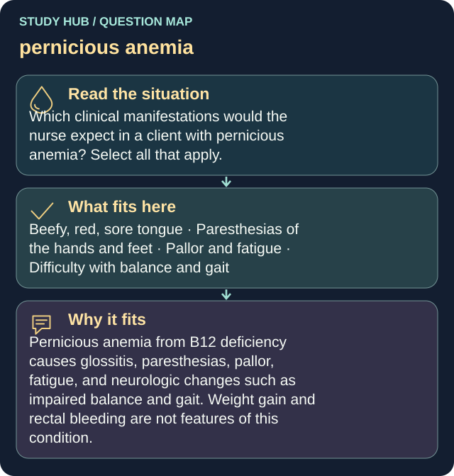

Which clinical manifestations would the nurse expect in a client with pernicious anemia? Select all that apply.
Answers
- Beefy, red, sore tongue
- Paresthesias of the hands and feet
- Pallor and fatigue
- Difficulty with balance and gait
Reasoning
Pernicious anemia from B12 deficiency causes glossitis, paresthesias, pallor, fatigue, and neurologic changes such as impaired balance and gait.
Clinical detail
Weight gain and rectal bleeding are not features of this condition.
Why the other answers do not fit
- Increased appetite with weight gain
Weight gain and rectal bleeding are not features of this condition.
- Bright red rectal bleeding
Weight gain and rectal bleeding are not features of this condition.


![Supine hypotension in pregnancy. Panel 1, lying flat on the back: the uterus presses on the inferior vena cava, less blood returns to the heart, and blood pressure may fall. Panel 2, turned onto the left side with the left side down: turning left reduces pressure on the IVC, blood returns to the heart more easily, and blood pressure often improves. Bottom bar: if a left tilt is needed, place a wedge under the RIGHT hip - right hip up tilts the body LEFT. Footnote: the IVC is the large vein carrying blood from the lower body back to the heart](../../img/infographics/supine-hypotension-pregnancy.webp)